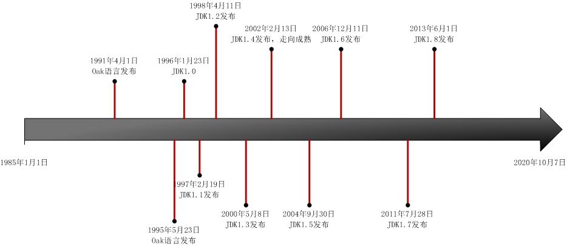

Table of Contents generated with DocToc
Java发展史

- 1991 年，James Gosling 博士发布产品 Oak，这是 Java 语言的前身。
- 1995 年，Oak 语言改名为 Java。
- 1996 年，JDK1.0 发布，提供了纯解释执行的 Java 虚拟机实现：Sun Classic VM。
- 1997 年，JDK1.1 发布，代表技术有：JDBC、JavaBeans、内部类、反射。
- 1998 年，JDK1.2 发布，Java 技术体系被拆分为 J2SE、J2EE、J2ME 三大体系。
- 2000 年，JDK1.3 发布，默认的 Java 虚拟机由 Sun Classic VM 改为 HotSopt。
- 2002 年，JDK1.4 发布，Java 真正走向成熟，代表技术有：正则表达式、NIO等。
- 2004 年，JDK1.5 发布，对语法易用性做了很大改进，新增了泛型、枚举等，代表技术有：并发包等。
- 2006 年，JDK1.6 发布，将 J2EE/J2SE/J2ME 的命名方式改为 Java SE 6 / Java EE 6 / Java ME 6。
- 2009 年，Sun 公司因为经营不善被 Oracle 公司收购。
- 2011 年，JDK1.7 发布。
- 2013 年，JDK1.8 发布。